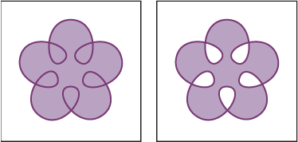
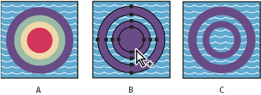
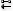
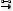

Apply fill rules to compound paths
You can specify whether a compound path is a nonzero winding path or an even‑odd path.
- Nonzero winding fill rule
- Uses mathematical equations to determine if a point is outside or inside a shape. Illustrator uses the nonzero winding rule as the default rule.
- Even-odd fill rule
- Uses mathematical equations to determine if a point is outside or inside a shape. This rule is the more predictable rule because every other region within an even‑odd compound path is a hole, regardless of path direction. Some applications, such as Adobe Photoshop, use the even‑odd rule by default, so compound paths imported from these applications will use the even‑odd rule.
Self-intersecting paths are paths that intersect themselves. You can choose to make these paths either nonzero winding or even‑odd, depending on how you want them to look.

Self-intersecting path with Use Non‑Zero Winding Fill Rule
(left) compared with Use Even‑Odd Fill Rule (right)
When you create a nonzero winding compound path, you can specify whether overlapping paths appear with holes or are filled by clicking a Reverse Path Direction button in the Attributes panel.

Fill rules
- A.
- Four circular paths
- B.
- Circular paths selected, converted into compound path
- C.
- Reverse Path Direction applied to innermost path
 Change the fill rule for a compound path
Change the fill rule for a compound path
- Select the compound path using the Selection tool or Layers panel.
- In the Attributes panel, click the Use Non‑Zero Winding Fill Rule button or the Use Even‑Odd Fill Rule button .
Change a hole in a compound path to a filled area
- Make sure that the compound path uses the nonzero winding fill rule.
- With the Direct Selection tool, select the part of the compound path to reverse. Do not select the entire compound path.
- In the Attributes panel, click the Reverse Path Direction
Off button

or the Reverse Path Direction On button
.